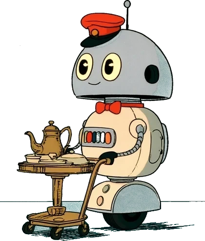

마음의 짐을 하나씩 트렁크에 맡긴 사람들이
열세 개 역에서 차례로 기차에 오릅니다.
아직 맡기지 않은 마음의 짐NO. ????
부산역 수하물칸에 마음의 짐 하나를 맡기고 런던행 밤기차에 오른 승객. 열세 개 역에서 동화 속 사람들을 만나, 그들의 짐을 잠깐씩 함께 들어 준다. 런던에 닿으면 맡긴 짐을 돌려받는다.

스무 해째 이 열차의 수하물칸을 지키는 로봇. 잠들지 않는다. 대신 승객들이 편히 잠드는 걸 지켜보는 일을 좋아한다. 아침마다 오늘의 방송을 한다.
이름을 누르면 인사를 건네요. 이미 만난 승객에게는 동행 도장이 찍혀 있어요.